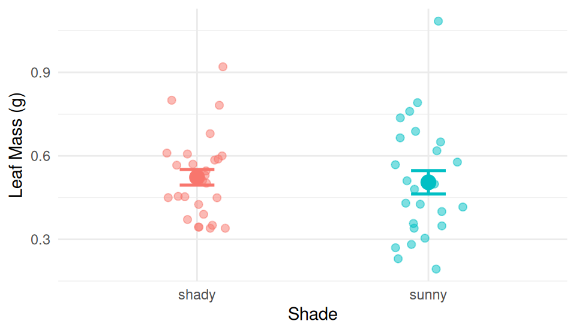
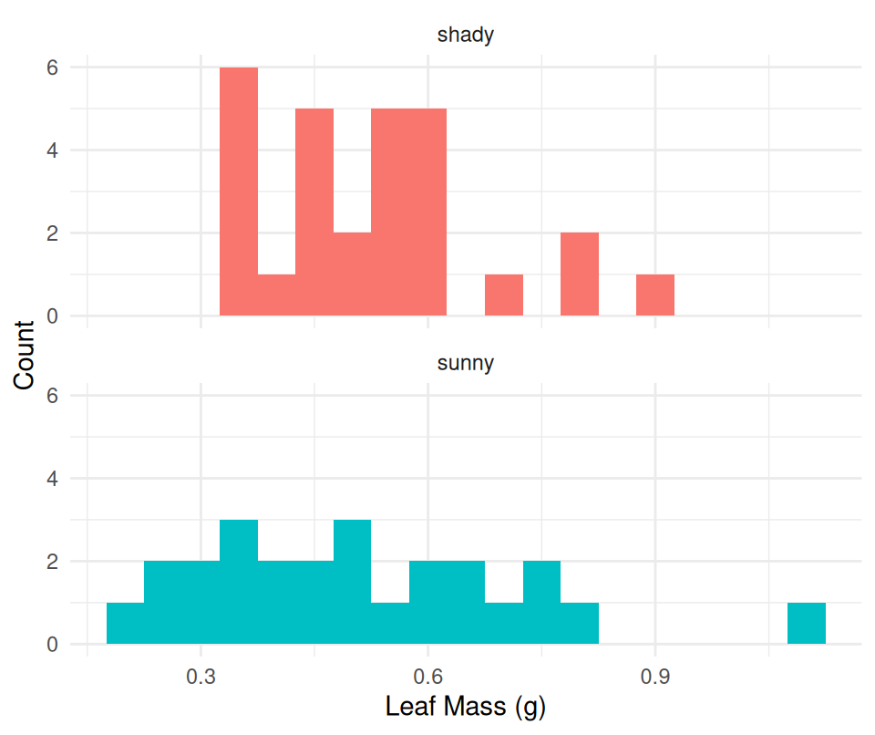
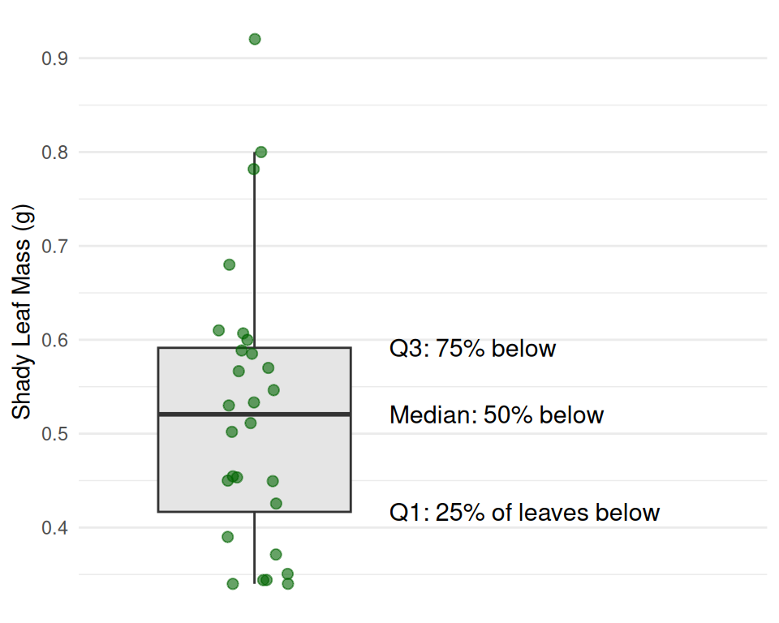
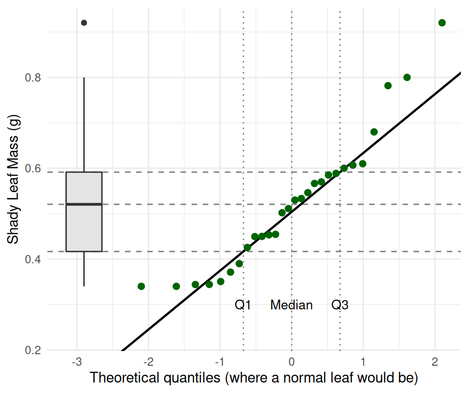
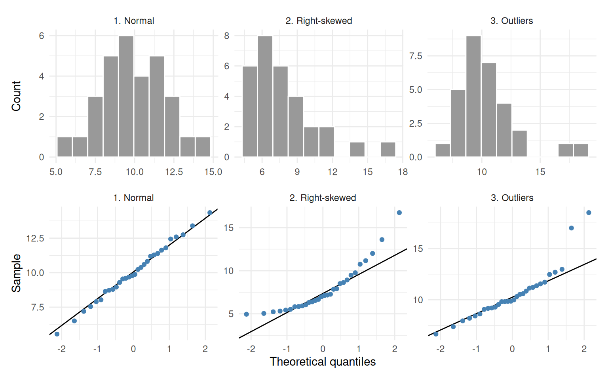
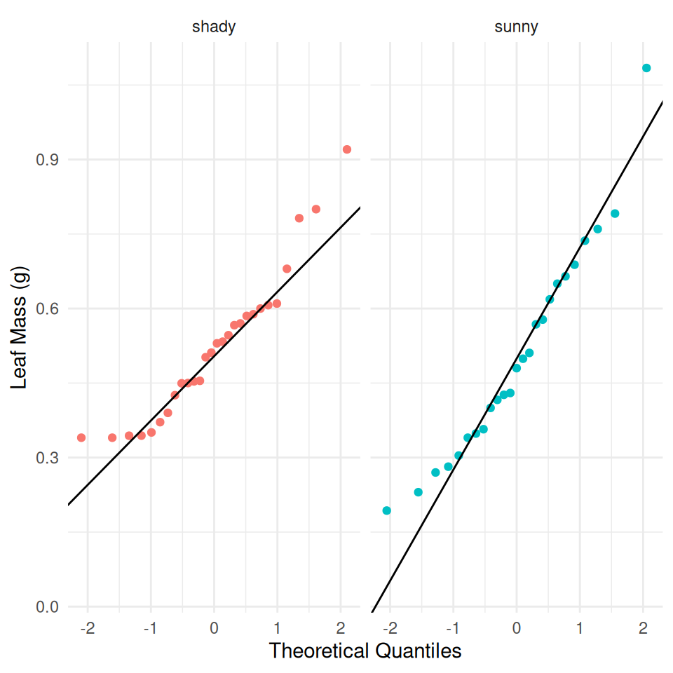

# Load all packages at the top ----------------------------
library(readxl) # reading Excel files
library(tidyverse) # data manipulation + ggplot2
library(janitor) # clean_names()
library(car) # Levene's test for equal varianceLecture 09 — T-Tests I: Setting Up the Test
Hypotheses and checking assumptions before we test
tidyverse
descriptive-stats
Why comparing means isn’t enough, why Welch’s is the safe default, checking normality (histogram, QQ plot, Shapiro-Wilk) and variance (Levene’s), then a first run of the t-test.
Where we left off (Lectures 05–07)
- Wrangling —
filter(),select(),mutate(),arrange()as the core tidyverse verbs - Descriptive stats — mean, SD, SE with
group_by()+summarize() - Box plot + jittered points; mean ± SE with
stat_summary() - Quarto report — you already ran a Welch’s t-test once, at the end
- Prediction: shady-side leaves would be heavier than sunny-side leaves
Note
✅ Key idea for today
Last time we ran a t-test. Today we slow down and do it properly: state the hypotheses, check the assumptions, and only then run the test.
Goals for Today
- Understand why comparing means is not enough — we need a test
- Meet the two-sample t-test and why we default to Welch’s
- State null and alternate hypotheses
- Check assumptions before running any test
- normality: histogram, QQ plot, Shapiro-Wilk
- variance: Levene’s test
- Run the t-test (we decode it next lecture)
Tools added today:
stat_qq()+stat_qq_line()— QQ plotsshapiro.test()— normality testcar::leveneTest()— variance test
Reading:
- 📖 Whitlock & Schluter, Ch. 12 — Comparing two means
- 📖 Whitlock & Schluter, Ch. 13 — Handling violations of assumptions
Today’s naming:
- plots →
_plot - test results →
_model
Load Libraries and Data
# Load the leaf data from the data folder -----------------
leaf_df <-
read_excel("data/2026_09_03_data_sci_leaf_area.xlsx") %>%
clean_names()
Note
car is the Companion to Applied Regression package. It contains leveneTest(), which checks whether two groups have similar spread.
Install once: install.packages("car")
🧩 Chunk 1 of 3 · Why We Test
We will cover: why comparing means isn’t enough, the five steps we’ll use for every test this semester, what a two-sample t-test does, and why we default to Welch’s.
Why Comparing Means Is Not Enough
# Remind ourselves what the data look like ---------------
recap_plot <- leaf_df %>%
ggplot(aes(x = shade, y = mass_g, color = shade)) +
geom_jitter(width = 0.15, alpha = 0.5, size = 2) +
stat_summary(fun = mean, geom = "point", size = 4) +
stat_summary(
fun.data = mean_se,
geom = "errorbar",
width = 0.15,
linewidth = 0.9
) +
labs(x = "Shade", y = "Leaf Mass (g)") +
theme_minimal() +
theme(legend.position = "none")
recap_plot
The two means look close — and with this much scatter, they could easily be the same:
- About 25 leaves per group
- Lots of natural variability within each group
- The groups overlap heavily
A p-value answers:
“If there were really no difference, how often would we see a gap at least this big just by chance?”
Large p → a gap this size is nothing unusual.
Five Steps to a Hypothesis Test
Every hypothesis test this semester — t-test, ANOVA, regression — follows the same steps:
| Step | Action | When |
|---|---|---|
| 1 | State H₀ and Hₐ | Today |
| 2 | Check normality | Today |
| 3 | Check equal variance | Today |
| 4 | Run the test | Today (a first look) |
| 5 | Interpret and report | Next lecture |
Important
Check assumptions BEFORE running the test.
If the data badly break the assumptions, the p-value can’t be trusted.
With ~25 per group our main worry is badly non-normal data. The t-test handles mild departures fine.
What Is a Two-Sample t-Test?
A two-sample t-test compares the means of two independent groups.
It asks: is the gap between the two means big compared with the scatter inside each group?
\[t = \frac{\text{difference between the means}}{\text{noise (scatter) in the data}}\]
- Big gap, little scatter → big t → small p-value
- Small gap, lots of scatter → t near 0 → large p-value
R does the arithmetic — your job is to set the test up correctly and read the answer.
| Piece | Our leaves |
|---|---|
| Group 1 | Shady leaves |
| Group 2 | Sunny leaves |
| Measured | mass_g |
| H₀ | \(\mu_{shady} = \mu_{sunny}\) |
| Hₐ | \(\mu_{shady} \neq \mu_{sunny}\) |
Why Welch’s? — Don’t Assume Equal Variance
There are two versions of the two-sample t-test:
- Standard (Student’s) t-test — assumes both groups have the same spread
- Welch’s t-test — lets each group have its own spread
When the spreads really are equal, both give almost the same answer. When they are not, the standard test gives too many false positives.
Tip
Best practice: use Welch’s as your default for every two-group comparison.
In R: var.equal = FALSE
→ ACTIVITY 9 Parts 1–2 now
🧩 Chunk 2 of 3 · Steps 1–3: Hypotheses & Assumptions
We will cover: writing H₀ / Hₐ, checking normality three ways (histogram, QQ plot, Shapiro-Wilk), and checking equal variance (Levene’s).
Step 1 — Hypotheses
Biological prediction: shady-side leaves will be larger and heavier — they need more surface area to capture the limited light under the canopy.
| Formal statement | |
|---|---|
| H₀ — null | \(\mu_{shady} = \mu_{sunny}\) — no difference in mean leaf mass |
| Hₐ — alternate | \(\mu_{shady} \neq \mu_{sunny}\) — mean leaf mass differs by side |
Two-tailed — detects a difference in either direction. α = 0.05 — reject H₀ if p < 0.05.
Why two-tailed when we predicted shady > sunny?
- A one-tailed test only looks in one direction
- Two-tailed is more conservative and the standard in most journals
Why write hypotheses first?
- Keeps the analysis honest
- Prevents “HARKing” — Hypothesizing After the Results are Known
Step 2 — Normality: Histograms
# Histograms stacked in one column — same x-axis --------
hist_norm_plot <- leaf_df %>%
ggplot(aes(x = mass_g, fill = shade)) +
geom_histogram(binwidth = 0.05) +
facet_wrap(~shade, ncol = 1) +
labs(x = "Leaf Mass (g)", y = "Count") +
theme_minimal() +
theme(legend.position = "none")
hist_norm_plot
ncol = 1 stacks the panels. Both share one x-axis, so you can see at a glance:
- where each group is centered
- how wide each group spreads
- which group has the long tail
What to look for:
- Roughly bell-shaped — one hump, not badly lopsided
- No big outliers far from the rest
With ~25 leaves the bars are lumpy — that’s normal for real data. It’s hard to judge “bell-shaped” by eye, which is why we add a QQ plot.
First: What Is a Quantile? (you already know one)

A quantile is a value that a certain percent of the data falls below.
The box plot already shows three of them:
- Q1 (25th percentile) — bottom of the box
- Median (50th) — the line in the middle
- Q3 (75th) — top of the box
A QQ plot uses every leaf as a quantile, not just three — and asks whether they are spaced the way a normal (bell-curve) distribution would space them.
How a QQ Plot Works

What R does for you:
- Sorts the leaves from lightest to heaviest (the y-axis)
- Works out where each leaf would sit if the data were perfectly normal (the x-axis, in SD units: −2 … 0 … +2)
- Plots actual vs. expected — one dot per leaf
Straight line = normal.
The dashed lines connect the box plot’s Q1, median, and Q3 to the same leaves on the QQ plot. The middle half of the dots is the box.
Here the heaviest few shady leaves bend up above the line — a long right tail.
What Good and Bad QQ Plots Look Like

Made-up data, 30 values each. Top: histogram. Bottom: QQ plot of the same values.
- Normal: dots hug the line
- Skewed: dots curve away at one end (a banana shape)
- Outliers: a few dots jump off the line at an end
A little wiggle at the very ends is fine — look for a clear bend.
Step 2 — Normality: Our QQ Plots
# QQ plot per group — dots should follow the line -------
qq_plot <- leaf_df %>%
ggplot(aes(sample = mass_g, color = shade)) +
stat_qq() +
stat_qq_line(color = "black") +
facet_wrap(~shade) +
labs(x = "Theoretical Quantiles",
y = "Leaf Mass (g)") +
theme_minimal() +
theme(legend.position = "none")
qq_plot
New pieces:
aes(sample = mass_g)— a QQ plot takessample =, notx =/y =stat_qq()— draws one dot per leafstat_qq_line()— draws the “perfectly normal” line
What do you see?
- Sunny: dots follow the line well
- Shady: mostly on the line, but the heaviest leaves bend up — the same right tail you saw in the histogram
Step 2 — Normality: Shapiro-Wilk Test
Note
🔮 Predict first: Shapiro-Wilk’s H₀ is “the data are normal.” From the QQ plots, predict for each side: will p be above or below 0.05?
# Shapiro-Wilk p-value for each side -------------------
leaf_df %>%
group_by(shade) %>%
summarize(shapiro_p = shapiro.test(mass_g)$p.value)# A tibble: 2 × 2
shade shapiro_p
<chr> <dbl>
1 shady 0.0427
2 sunny 0.288 Same group_by() + summarize() as for means — it runs the test once per side. $p.value pulls out just the p-value.
Shapiro-Wilk H₀: the data are normal.
- p > 0.05 → no evidence against normality → go ahead
- p < 0.05 → evidence of non-normality → look hard at the plots
Important
The plot comes first; the test backs it up.
Shady is just under 0.05 — matching the bend we saw in the QQ plot. A mild tail like this is not a reason to abandon the t-test; it is robust to small departures.
Step 3 — Check Variance: Levene’s Test
# Levene's test — are the spreads similar? --------------
leveneTest(mass_g ~ shade, data = leaf_df)Levene's Test for Homogeneity of Variance (center = median)
Df F value Pr(>F)
group 1 2.9667 0.09105 .
51
---
Signif. codes: 0 '***' 0.001 '**' 0.01 '*' 0.05 '.' 0.1 ' ' 1Look back at the stacked histograms: which group was wider?
Levene’s H₀: the two groups have equal variance (spread).
- p > 0.05 → spreads are not significantly different
- p < 0.05 → spreads are different
Either way we use Welch’s (var.equal = FALSE). We run Levene’s to understand our data, not to pick the test.
→ ACTIVITY 9 Parts 3–7 now
🧩 Chunk 3 of 3 · Step 4: Run the Test
We will cover: running Welch’s t-test now that every assumption is checked. Reading the output line by line is next lecture.
Step 4 — Run Welch’s t-Test
Note
🔮 Predict first: the means were close and the groups overlap heavily. Above or below 0.05?
# Welch's two-sample t-test -----------------------------
leaf_model <- t.test(mass_g ~ shade, data = leaf_df,
var.equal = FALSE)
leaf_model
Welch Two Sample t-test
data: mass_g by shade
t = 0.35579, df = 42.527, p-value = 0.7238
alternative hypothesis: true difference in means between group shady and group sunny is not equal to 0
95 percent confidence interval:
-0.08392774 0.11987117
sample estimates:
mean in group shady mean in group sunny
0.5230357 0.5050640 Reading the formula mass_g ~ shade:
“mass explained by shade” — the number on the left, the groups on the right.
For today, find three numbers:
- t — the signal-to-noise ratio
- df — degrees of freedom
- p-value — the decision number
Next lecture: every line of this output, writing a results sentence, and the paired t-test.
→ ACTIVITY 9 Part 8 now
Why the Checks Matter — Next Lecture’s Choice
Next lecture you run two tests on the sugar maple leaves. The checks you do today decide which version is allowed:
| Test | Must be roughly normal | Equal spread needed? |
|---|---|---|
| Two-sample (Welch’s) | each group | No — Welch’s handles it |
| Paired | the differences within each pair | No — only one set of numbers |
If normality clearly fails → use the rank-based partner instead (next lecture).
Important
Check first, test second.
A p-value from a test whose assumptions are broken can’t be trusted — and you can’t un-see a result. Deciding the test before you run it keeps you honest.
Your homework (Part B) is exactly this: check the sugar maple data and decide whether a t-test is OK.
What We Learned Today
- Why we need a hypothesis test — means alone are not enough
- The five steps we’ll reuse all semester
- Welch’s t-test —
var.equal = FALSEis the safe default - Checking assumptions before testing:
- normality — histograms (
ncol = 1), QQ plot, Shapiro-Wilk - variance — Levene’s
- normality — histograms (
- The QQ plot: dots on the line = normal
Hand in: Part B of your skeleton — check the assumptions for the sugar maple leaves, written by you.
Up next — Lecture 10, T-Tests II:
- Decode the
t.test()output line by line - Make a decision and write a results sentence
- Two-sample vs. paired t-tests